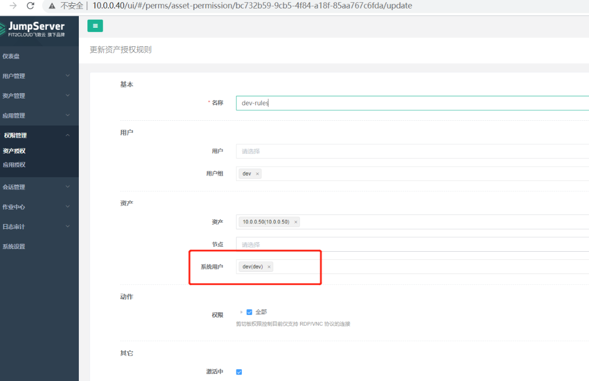
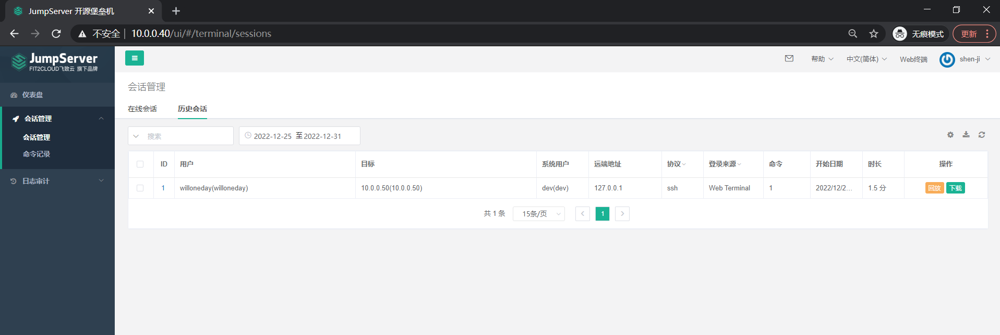

一、nginx实现全栈SSL。要求http rewrite到https协议
Nginx 实现全栈 SSL，需要满足以下几个条件：
安装 Nginx 时需要添加 –with-http_ssl_module 参数 。准备 SSL 证书和私钥，证书可以从证书颁发机构购买，私钥可以使用 openssl 工具生成。
在 Nginx 配置文件中启用 SSL 模块，配置 SSL 证书和私钥的路径。
在 Nginx 配置文件中配置 HTTPS 服务器，并将 HTTP 请求重定向到 HTTPS 服务器。
（1）编译安装nginx
（2）配置文件 1 2 3 4 5 6 7 8 9 10 11 12 13 14 15 16 17 18 [root@Rocky04 ~]$host /$1 redirect;
二、nginx实现动静分离 （1）范例一 1 2 3 4 5 6 7 8 9 location ^~ /images {alias /data/nginx/api;
（2）范例二 1 2 3 4 5 6 7 8 location ~ \.php$ {$fastcgi_script_name ;
三、nginx实现防盗链功能 1 2 3 4 5 6 7 8 9 10 if ($invalid_referer ) {return 403;
1 2 3 4 5 6 7 8 9 10 if ($invalid_referer ) { return 403 "Forbidden Access" ;
四、解析nginx常见的负载均衡算法 （1）http 反向代理负载均衡
Nginx 可以基于ngx_http_upstream_module模块提供服务器分组转发、权重分配、状态监测、调度算法等高级功能
官方文档
（2） http upstream配置参数
server address [parameters];
#配置一个后端web服务器，配置在upstream内，至少要有一个server服务器配置。
#server支持的parameters如下：
weight=number #设置权重，默认为1,实现类似于LVS中的WRR,WLC等
max_conns=number max_fails=number #后端服务器的下线条件,当客户端访问时,对本次调度选中的后端服务器连续进行检测多少次, #如果都失败就标记为不可用,默认为1次, #当客户端访问时,才会利用TCP触发对探测后端服务器健康性检查,而非周期性的探测
#后端服务器的上线条件,对已经检测到处于不可用的后端服务器,每隔此时间间隔再次进行检测是否恢复可用，如果发现可用,则将后端服务器参与调度,默认为10秒
#设置为备份服务器，当所有后端服务器不可用时,才会启用此备用服务器
#标记为down状态,可以平滑下线后端服务器,新用户不再调度到此主机,旧用户不受影响
调度算法：三种大的类
1 2 3 4 5 6 7 hash KEY [consistent];hash $request_uri consistent; hash $cookie_sessionid
1 2 3 4 5 6 7 8 9 10 11 12 13 14 15 16 17 18 19 20 21 22 23 24 25
五、基于LNMP完成搭建任意一种应用 LNMP实现可道云私有云
可道云官网
php-redis扩展模块官网
部署规划：
10.0.0.20：Rocky02，Nginx，php-fpm，kodbox
10.0.0.30：Rocky03，MySQL8.0，Redis5.0
（1）准备 MySQL 数据库 1 2 3 4 5 6 [root@Rocky03 ~]'kodbox' @'10.0.0.%' identified by '123456' ;'kodbox' @'10.0.0.%' ;
（2）准备 Redis 服务 1 2 3 4 [root@Rocky03 ~]bind 0.0.0.0
（3）准备 Nginx 服务 1 2 3 4 5 6 7 8 9 10 11 12 13 14 15 16 17 18 19 20 [root@Rocky02 ~]$fastcgi_script_name ;
（4）安装和配置 php 支持 redis 1 2 3 4 5 6 7 8 9 10 11 12 13 14 15 16 17 18 19 20 21 22 23 24 25 26 27 28 29 30 31 32 33 34
（5）准备可道云程序 1 2 3 4 [root@Rocky02 ~]
（6）初始化和登录可道云
六、jumpserver 总结安装部署，添加用户授权，行为审计 1 基于容器部署
基于容器 **,**安装完毕后可以通过以下方式访问
浏览器访问：http://<容器所在服务器IP>
默认管理员账户 admin 密码 admin
SSH 访问：ssh -p 2222 <容器所在服务器IP>
XShell 等工具请添加 connection 连接, 默认 ssh 端口 2222
（1）安装 Docker 环境 1 2 3 4 5 6 7 8 9 10 11 12 13 14 15 16 17 18 19 20 21 22 23 24 25 26 27 28 29 30 31 32 33 34 35 36 37 38 39 40 41 42 43 44 45 46 47 48 49 50 51 52 53 54 55 56 57 58 59 60 61 62 63 64 65 66 67 68 69 70 71 72 73 74 75 76 77 78 79 80 81 82 83 84 85 86 87 88 89 90 91 92 93 94 95 96 97 98 99 100 101 102 103 104 105 106 107 108 109 110 111 112 113 #!/bin/bash "20.10.10" "5:${DOCKER_VERSION} ~3-0~`lsb_release -si`-`lsb_release -cs`" "echo -e \\033[1;32m" "echo -e \\033[1;31m" "\033[m" color "echo -en \\033[${RES_COL} G" "echo -en \\033[1;32m" "echo -en \\033[1;31m" "echo -en \\033[1;33m" "echo -en \E[0m" echo -n "$1 " && $MOVE_TO_COL echo -n "[" if [ $2 = "success" -o $2 = "0" ] ;then ${SETCOLOR_SUCCESS} echo -n $" OK " elif [ $2 = "failure" -o $2 = "1" ] ;then ${SETCOLOR_FAILURE} echo -n $"FAILED" else ${SETCOLOR_WARNING} echo -n $"WARNING" fi ${SETCOLOR_NORMAL} echo -n "]" echo install_docker if [ $ID = "centos" -o $ID = "rocky" ];then if [ $VERSION_ID = "7" ];then cat > /etc/yum.repos.d/docker.repo <<EOF [docker] name=docker gpgcheck=0 #baseurl=https://mirrors.aliyun.com/docker-ce/linux/centos/7/x86_64/stable/ baseurl=https://mirrors.tuna.tsinghua.edu.cn/docker-ce/linux/centos/7/x86_64/stable/ EOF else cat > /etc/yum.repos.d/docker.repo <<EOF [docker] name=docker gpgcheck=0 #baseurl=https://mirrors.aliyun.com/docker-ce/linux/centos/8/x86_64/stable/ baseurl=https://mirrors.tuna.tsinghua.edu.cn/docker-ce/linux/centos/8/x86_64/stable/ EOF fi ${COLOR_FAILURE} "Docker有以下版本" ${END} ${COLOR_FAILURE} "5秒后即将安装: docker-" ${DOCKER_VERSION} " 版本....." ${END} ${COLOR_FAILURE} "如果想安装其它Docker版本，请按ctrl+c键退出，修改版本再执行" ${END} sleep 5$DOCKER_VERSION docker-ce-cli-$DOCKER_VERSION \"Base,Extras的yum源失败,请检查yum源配置" 1;exit ; }else $COLOR "Docker已安装，退出" 1 && exit "更新包索引失败" 1 ; exit 1; } "安装相关包失败" 1 ; exit 2; } "deb [arch=amd64] https://mirrors.tuna.tsinghua.edu.cn/docker-ce/linux/ubuntu $(lsb_release -cs) stable" ${COLOR_FAILURE} "Docker有以下版本" ${END} ${COLOR_FAILURE} "5秒后即将安装: docker-" ${UBUNTU_DOCKER_VERSION} " 版本....." ${END} ${COLOR_FAILURE} "如果想安装其它Docker版本，请按ctrl+c键退出，修改版本再执行" ${END} sleep 5${UBUNTU_DOCKER_VERSION} docker-ce-cli=${UBUNTU_DOCKER_VERSION} fi if [ $? -eq 0 ];then "安装软件包成功" 0else "安装软件包失败，请检查网络配置" 1exit fi config_docker mkdir -p /etc/dockertee /etc/docker/daemon.json <<-'EOF' "registry-mirrors" : ["https://si7y70hh.mirror.aliyuncs.com" ],"insecure-registries" :["harbor.magedu.org:80" ]enable docker"Docker 安装成功" 0 || color "Docker 安装失败" 1set_alias echo 'alias rmi="docker images -qa|xargs docker rmi -f"' >> ~/.bashrcecho 'alias rmc="docker ps -qa|xargs docker rm -f"' >> ~/.bashrc
（2）安装 Mysql 环境 1 2 3 4 5 6 7 8 9 10 11 12 13 14 15 16 17 18 19 20 21 22 23 24 25 26 27 28 mkdir -p /etc/mysql/mysql.conf.d/mkdir -p /etc/mysql/conf.d/tee /etc/mysql/mysql.conf.d/mysqld.cnf <<EOF [mysqld] pid-file= /var/run/mysqld/mysqld.pid socket= /var/run/mysqld/mysqld.sock datadir= /var/lib/mysql symbolic-links=0 character-set-server=utf8 EOF tee /etc/mysql/conf.d/mysql.cnf <<EOF [mysql] default-character-set=utf8 EOF
（3）安装 Redis 环境 1 docker run -d -p 6379:6379 --name redis --restart always redis
（4）生成 key 和 token 1 2 3 4 5 6 7 8 9 10 11 12 13 14 15 16 17 18 19 20 21 22 if [ ! "$SECRET_KEY " ]; then cat /dev/urandom | tr -dc A-Za-z0-9 | head -c 50`;echo "SECRET_KEY=$SECRET_KEY " >> ~/.bashrc;echo SECRET_KEY=$SECRET_KEY ;else echo SECRET_KEY=$SECRET_KEY ;fi if [ ! "$BOOTSTRAP_TOKEN " ]; then cat /dev/urandom | tr -dc A-Za-z0-9 | head -c 16`;echo "BOOTSTRAP_TOKEN=$BOOTSTRAP_TOKEN " >> ~/.bashrc;echo BOOTSTRAP_TOKEN=$BOOTSTRAP_TOKEN ;else echo BOOTSTRAP_TOKEN=$BOOTSTRAP_TOKEN ;fi
（5）运行Jumpserver 1 2 3 4 5 6 7 8 9 10 11 12 13 14 15 16 17 18 19 20 21 '' \true \
1 2 3 4 5 6 7 8 9 10 11 12 [root@JumpServer ~]
2 添加用户授权，行为审计 （1）登录
（2）创建用户组和用户
（3）创建普通用户和特权用户
普通用户选择自动推送或手动进Linux创建此账号
特权用户是后端真实root的账号密码
（4）创建资产
需要选择刚才创建的特权用户
（5）资产授权 
（6）用户登录
（7）审计用户登录 
七、JVM垃圾回收原理，JVM调优 （1）JVM垃圾回收原理
Java虚拟机（JVM）的垃圾回收（GC）是一种自动内存管理机制，它的目的是回收不再使用的内存，以便重新利用这些内存来分配新的对象。这样可以减少内存泄漏和内存溢出的风险，并保证程序的正常运行。
JVM垃圾回收过程分为两个阶段：标记和清除。在标记阶段，JVM扫描内存中的所有对象，并标记出那些可以被回收的对象。在清除阶段，JVM清除所有被标记的对象，并释放它们占用的内存。
JVM使用多种算法来执行垃圾回收，其中包括标记-清除算法、复制算法和分代回收算法。
标记-清除算法是最常见的垃圾回收算法。它的工作流程如下：
标记：扫描内存中的所有对象，并标记出那些可以被回收的对象。
清除：清除所有被标记的对象，并释放它们占用的内存。
整理：整理内存空间，使空闲内存形成连续的块。
复制算法是一种改进的垃圾回收算法，它的工作流程如下：
将内存分成两块，每次只使用其中一块。
将所有存活的对象复制到另一块内存中。
释放原来使用的内存块。
复制算法的优点是，因为每次只需要处理存活的对象，所以效率较高，且不需要进行内存整理。但是，它的缺点是需要额外的内存空间来存储复制后的对象，因此可用内存空间会减半。
分代回收算法是一种改进的垃圾回收算法，它将内存分为新生代和老年代。新生代内存中存储的是新创建的对象，老年代内存中存储的是存活时间较长的对象。
分代回收算法的工作流程如下：
对新生代进行复制算法回收，回收那些已死亡的对象。
将存活的对象复制到老年代。
对老年代进行标记-清除或其他算法回收，回收那些已死亡的对象。
分代回收算法的优点是可以更高效地回收内存，因为新生代中的对象死亡率较高，所以使用复制算法效率较高。而老年代中的对象死亡率较低，所以使用标记-清除或其他算法效率较高。
总的来说，JVM垃圾回收是一种非常重要的机制，它可以帮助我们自动管理内存，减少内存泄漏和内存溢出的风险，并保证程序的正常运行。但是，垃圾回收也有一定的开销，因此我们在编写代码时也要注意避免不必要的内存分配。
（2）JVM调优 1 1、java -cp . -Xms512m -Xmx1g jpress
1 2 3 4 5 6 7 8 9 2、JAVA_OPTS="-server -Xms4g -Xmx4g -XX:NewSize= -XX:MaxNewSize= " "-server -Xms128m -Xmx512m -XX:NewSize=48m -XX:MaxNewSize=200m"
1 2 3 4 5 6 7 8 9 10 11 12 13 14 15 16 3、线程池调整"8080" protocol="HTTP/1.1" connectionTimeout="20000" redirectPort="8443" maxThreads="2000" />"on" ，CPU和流量的平衡
1 2 3 4 5 6 7 4、指定垃圾回收器--适合响应时间短、交互式的网站，提高用户体验"-server -Xmx512m -Xms128m -XX:NewSize=48m -XX:MaxNewSize=200m -XX:+UseConcMarkSweepGC -XX:+UseCMSCompactAtFullCollection -XX:CMSFullGCsBeforeCompaction=5"
八、tomcat实现java应用发布 （1）安装java （2）安装tomcat 1 2 [root@blog ~]
（3）jpress 1 2 3 4
九、实现tomcat session粘性，并验证过程
环境：
dns：10.0.0.20
nginx：10.0.0.30
tomcat1：10.0.0.40
tomcat2：10.0.0.50
（1）dns配置 1 2 3 4 5 6 "willoneday.org" IN {type master;"willoneday.org.zone" ;
1 2 3 4 5 6 7 8 9 10 11 12 $TTL 1D
（2）nginx配置 1 2 3 4 5 6 7 8 9 10 11 12 13 14 15 16 17 18 19 20 21 22 23 24 25 26 [root@nginx ~]hash $cookie_JSESSIONID ; $http_host ;
（3）tomcat1配置 1 2 3 4 5 "www.willoneday.org" appBase="/data/tomcat/node1" "true" autoDeploy="true" >
1 2 3 4 5 6 7 8 9 10 11 12 13 14 15 16 17 18 "java.util.*" %>"en" >head >"UTF-8" >test </title>":" + request.getLocalPort() %></div>"color:blue" ><%=session.getId() %></span></div>
（4）tomcat2配置 1 2 3 4 5 "www.willoneday.org" appBase="/data/tomcat/node2" "true" autoDeploy="true" >
1 2 3 4 5 6 7 8 9 10 11 12 13 14 15 16 17 18 "java.util.*" %>"en" >head >"UTF-8" >test </title>":" + request.getLocalPort() %></div>"color:blue" ><%=session.getId() %></span></div>
（5）验证
十、实现tomcat会话复制集群
环境：
dns：10.0.0.20
nginx：10.0.0.30
tomcat1：10.0.0.40
tomcat2：10.0.0.50
dns配置同上（第九题）
官方集群会话复制配置网址（根据自身tomcat版本参考）：https://tomcat.apache.org/tomcat-9.0-doc/cluster-howto.html
注意：官方tomcat7版本配置末尾少/
（1）nginx配置 1 2 3 4 5 6 7 8 9 10 11 12 13 14 15 16 17 18 19 20 21 22 23 24 [root@nginx ~]$http_host ;
（2）tomcat1配置 1 2 3 4 5 6 7 8 9 10 11 12 13 14 15 16 17 18 19 20 21 22 23 24 25 26 27 28 29 30 31 32 33 34 35 36 37 38 39 40 41 42 43 44 45 "www.willoneday.org" appBase="/data/tomcat/node1" "true" autoDeploy="true" >"org.apache.catalina.ha.tcp.SimpleTcpCluster" "8" >"org.apache.catalina.ha.session.DeltaManager" "false" "true" />"org.apache.catalina.tribes.group.GroupChannel" >"org.apache.catalina.tribes.membership.McastService" "228.0.0.4" "45564" "500" "3000" /> "org.apache.catalina.tribes.transport.nio.NioReceiver" "10.0.0.40" "4000" "100" "5000" "6" />"org.apache.catalina.tribes.transport.ReplicationTransmitter" >"org.apache.catalina.tribes.transport.nio.PooledParallelSender" />"org.apache.catalina.tribes.group.interceptors.TcpFailureDetector" />"org.apache.catalina.tribes.group.interceptors.MessageDispatchInterceptor" />"org.apache.catalina.ha.tcp.ReplicationValve" "" />"org.apache.catalina.ha.session.JvmRouteBinderValve" />"org.apache.catalina.ha.deploy.FarmWarDeployer" "/tmp/war-temp/" "/tmp/war-deploy/" "/tmp/war-listen/" "false" />"org.apache.catalina.ha.session.ClusterSessionListener" />
1 2 3 4 5 6 7 8 9 10 11
（3）tomcat2配置 1 2 3 4 5 6 7 8 9 10 11 12 13 14 15 16 17 18 19 20 21 22 23 24 25 26 27 28 29 30 31 32 33 34 35 36 37 38 39 40 41 42 43 44 45 "www.willoneday.org" appBase="/data/tomcat/node2" "true" autoDeploy="true" >"org.apache.catalina.ha.tcp.SimpleTcpCluster" "8" >"org.apache.catalina.ha.session.DeltaManager" "false" "true" />"org.apache.catalina.tribes.group.GroupChannel" >"org.apache.catalina.tribes.membership.McastService" "228.0.0.4" "45564" "500" "3000" />"org.apache.catalina.tribes.transport.nio.NioReceiver" "10.0.0.50" "4000" "100" "5000" "6" />"org.apache.catalina.tribes.transport.ReplicationTransmitter" >"org.apache.catalina.tribes.transport.nio.PooledParallelSender" />"org.apache.catalina.tribes.group.interceptors.TcpFailureDetector" />"org.apache.catalina.tribes.group.interceptors.MessageDispatchInterceptor" />"org.apache.catalina.ha.tcp.ReplicationValve" "" />"org.apache.catalina.ha.session.JvmRouteBinderValve" />"org.apache.catalina.ha.deploy.FarmWarDeployer" "/tmp/war-temp/" "/tmp/war-deploy/" "/tmp/war-listen/" "false" />"org.apache.catalina.ha.session.ClusterSessionListener" />
1 2 3 4 5 6 7
（4）验证
现在同一个网站调度到了不同的机器上，但是sessionid并没有改变。但是这种复制并不适合大型网站，众所周知tomcat占内存高，如果后端tomcat过多，sessionid复制就会占很大内存。只适合于小网站。